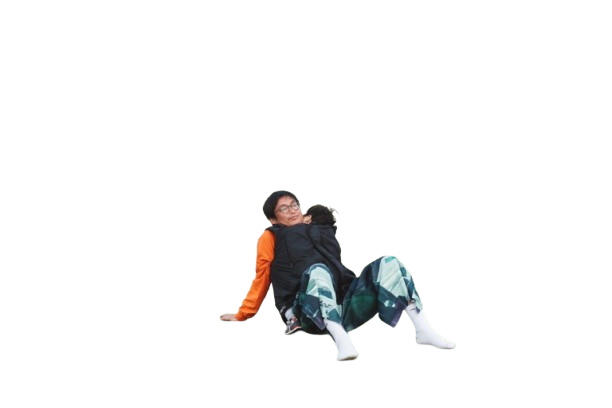

ABOUT WAMILY
ここは、家族の旅を
育てていく場所です。
まだ途中。でも、そこが好きです。
ABOUT WAMILY
まだ途中。でも、そこが好きです。
うちの子どもが2歳のとき、はじめて海外に連れていこうと決めました。行き先はイギリス、ロンドン。ずっと行きたかった街でした。
でも、いざ調べ始めると、困りました。子連れ向けの情報が、ほとんどない。「ロンドン 子連れ おすすめ」で検索しても出てくるのは、大人向けの観光情報か、子どもがいない前提の旅行記ばかり。
「現地で急に熱が出たらどこに行けばいいか」「ベビーカーで地下鉄に乗れるか」「授乳できる場所はあるか」——そんな、子連れ旅行者が本当に知りたいことが、どこにも書いていなかった。
「信頼できる情報に出会えないあのストレス、わかります。だから作り始めました。」
— サワディー
結局、現地に着いてから自分で調べながら動きました。それが思った以上に大変で、思った以上に楽しかった。帰国してから思ったんです。「これ、まとめておいたら次の誰かが助かるんじゃないか」と。Wamilyはそこから始まりました。

主役は、あなたです。ここに来てくれた「家族で旅したい人」が、いつも真ん中にいます。
サワディー
Wamilyオーナー / 子連れ旅行者
2024年1月からWamilyを作り始めました。子どもが生まれてから、家族でいろんな国に行くのが好きになりました。旅先で困ったこと・学んだことを、ここに置いています。
3歳・5歳の男の子と旅しています私はここの店主みたいなものです。本棚のある、黒板がある、常連が集まる居酒屋。そんな空気感を目指しています。でも主役は常に、カウンターの向こう側にいるあなた。
サワディー家が行った9カ国
Wamilyは完成したサービスではありません。育っていく過程そのものを見せる場所です。
行くたびに増える本棚
サワディー家が旅するたびにガイドブックが増えます。コミュニティの声でさらに広がります。
体温のある情報
実際に子どもを連れて行った人の経験だけを置いています。誰かの「これ、ほんとに助かった」を届けたい。
バトンを渡し合う
自分たちの困りごとを解決した先に、誰かの困りごとが解決される。旅の経験は、次の誰かへのバトンです。
目指せ全世界
今は9カ国。でも地球はもっと広い。子連れで行った国があれば、ぜひ教えてください。
家族の数だけ、旅がある。
誰かの経験が、誰かの地図になる。